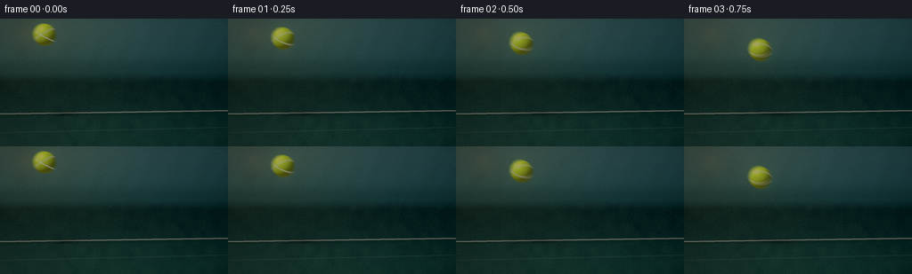
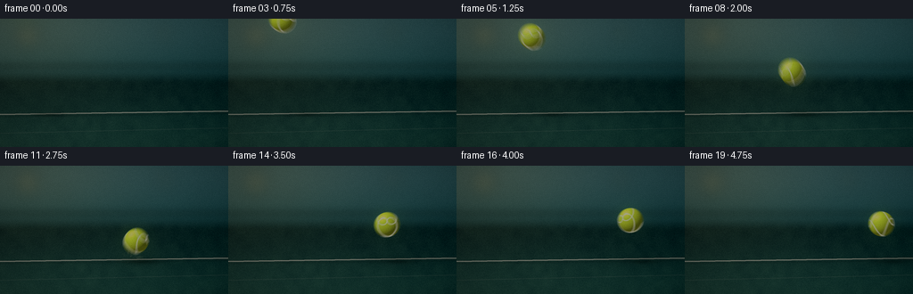
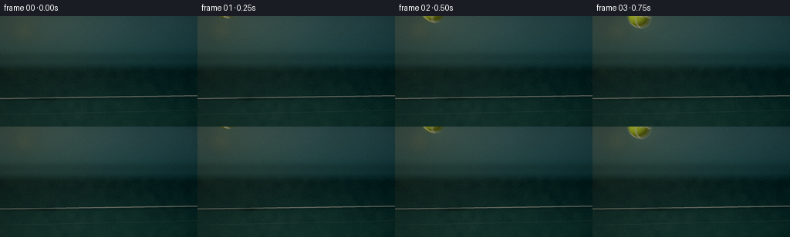
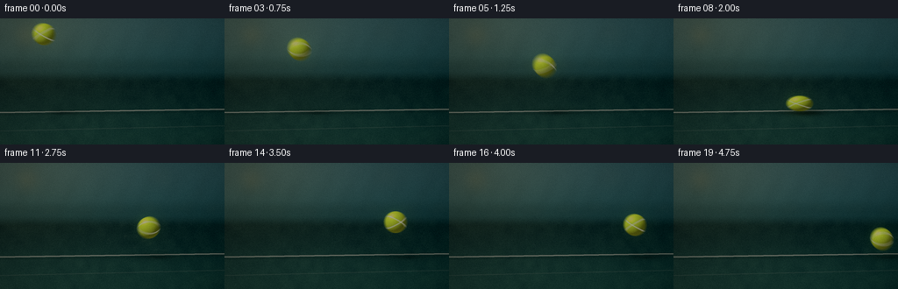
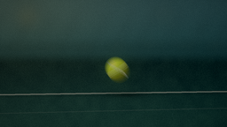
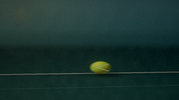
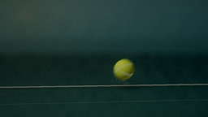
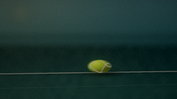
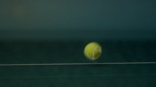
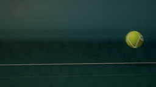

CODING AGENTS AS PIXEL WORLD MODELS
traex/DeepSeek-V4.1-Flash · phygen_028
点击播放 · 原生 RGB 像素
此结果可播放，但该运行尚未通过最终提交审核。页面展示不代表评测通过。
逐轮保存的候选
回放视频、检查图与代码变化。
每份候选均可单独播放。实际图片检查记录在下方工具轨迹中。
候选 01播放与检查图
点击播放 · 原生 RGB 像素


展开代码变化
--- 上一保存版本
+++ 本次保存版本
@@ -0,0 +1,457 @@
+from pathlib import Path
+
+import cv2
+import numpy as np
+from PIL import Image, ImageDraw, ImageFilter
+
+import artifact_io
+
+
+W, H = 256, 144
+FPS = 4.0
+FRAMES = 20
+SS = 4
+HW, HH = W * SS, H * SS
+CASE_DIR = Path(__file__).resolve().parent
+
+GROUND_Y = 106.0
+IMPACT_T = 2.0
+BALL_R = 12.5
+
+
+def mix(a, b, t):
+ return np.asarray(a, dtype=np.float32) * (1.0 - t) + np.asarray(b, dtype=np.float32) * t
+
+
+def smoothstep(edge0, edge1, value):
+ t = np.clip((value - edge0) / (edge1 - edge0), 0.0, 1.0)
+ return t * t * (3.0 - 2.0 * t)
+
+
+def gaussian_patch(width, height, cx, cy, sx, sy, opacity, color, base):
+ x0 = max(0, int(np.floor(cx - sx * 3.0)))
+ x1 = min(base.shape[1], int(np.ceil(cx + sx * 3.0)))
+ y0 = max(0, int(np.floor(cy - sy * 3.0)))
+ y1 = min(base.shape[0], int(np.ceil(cy + sy * 3.0)))
+ if x0 >= x1 or y0 >= y1:
+ return
+ yy, xx = np.mgrid[y0:y1, x0:x1]
+ dist = ((xx - cx) / sx) ** 2 + ((yy - cy) / sy) ** 2
+ alpha = np.exp(-dist * 0.5)[..., None] * opacity
+ patch = base[y0:y1, x0:x1]
+ base[y0:y1, x0:x1] = patch * (1.0 - alpha) + np.asarray(color, np.float32) * alpha
+
+
+def build_background():
+ yy, xx = np.mgrid[0:HH, 0:HW].astype(np.float32)
+ xn = xx / (HW - 1.0)
+ yn = yy / (HH - 1.0)
+
+ top = np.asarray([55.0, 92.0, 94.0], np.float32)
+ upper_mid = np.asarray([32.0, 70.0, 70.0], np.float32)
+ wall = np.asarray([24.0, 53.0, 52.0], np.float32)
+ floor_near = np.asarray([28.0, 63.0, 54.0], np.float32)
+ floor_far = np.asarray([15.0, 37.0, 34.0], np.float32)
+
+ img = np.empty((HH, HW, 3), np.float32)
+ upper_t = smoothstep(0.0, 0.52, yn)
+ img[:] = top * (1.0 - upper_t[..., None]) + upper_mid * upper_t[..., None]
+
+ wall_band = smoothstep(0.28, 0.40, yn) * (1.0 - smoothstep(0.44, 0.52, yn))
+ img = img * (1.0 - 0.48 * wall_band[..., None]) + wall * (0.48 * wall_band[..., None])
+
+ floor_mask = smoothstep(0.405, 0.505, yn)
+ floor_col = floor_far * (1.0 - smoothstep(0.48, 1.0, yn)[..., None])
+ floor_col += floor_near * smoothstep(0.48, 1.0, yn)[..., None]
+ floor_col *= (0.86 + 0.16 * (1.0 - xn[..., None] * 0.45))
+ img = img * (1.0 - floor_mask[..., None]) + floor_col * floor_mask[..., None]
+
+ # Warm sun wash from the upper left, with a darker right-hand corner.
+ sun_dist = ((xn - 0.08) / 0.55) ** 2 + ((yn - 0.03) / 0.55) ** 2
+ sun = np.exp(-sun_dist * 1.7)[..., None]
+ img += sun * np.asarray([27.0, 20.0, 5.0], np.float32)
+ img -= np.asarray([12.0, 4.0, 1.0], np.float32) * (xn[..., None] ** 2)
+
+ # Fine court texture and a low-frequency, weathered floor mottle.
+ rng = np.random.default_rng(2819)
+ fine = rng.normal(0.0, 1.0, (HH // 2, HW // 2)).astype(np.float32)
+ fine = np.asarray(
+ Image.fromarray(np.uint8(np.clip(fine * 22.0 + 128.0, 0, 255))).resize(
+ (HW, HH), Image.Resampling.BILINEAR
+ ),
+ np.float32,
+ )
+ fine = (fine - 128.0) / 128.0
+ img += fine[..., None] * (1.0 + 2.5 * floor_mask[..., None]) * np.asarray([5.0, 6.0, 4.5])
+
+ low = rng.normal(0.0, 1.0, (18, 32)).astype(np.float32)
+ low = np.asarray(
+ Image.fromarray(np.uint8(np.clip(low * 25.0 + 128.0, 0, 255))).resize(
+ (HW, HH), Image.Resampling.BICUBIC
+ ),
+ np.float32,
+ )
+ img += ((low - 128.0) / 128.0)[..., None] * floor_mask[..., None] * np.asarray([7.0, 9.0, 6.0])
+
+ # Out-of-focus fence uprights in the upper background.
+ overlay = Image.new("RGBA", (HW, HH), (0, 0, 0, 0))
+ draw = ImageDraw.Draw(overlay)
+ for i in range(10):
+ x = int((0.02 + i * 0.112) * HW + 12 * np.sin(i * 1.8))
+ draw.line((x, int(0.09 * HH), x - int(0.09 * HW), int(0.43 * HH)), fill=(13, 31, 31, 44), width=2 * SS)
+ for i in range(8):
+ x = int((0.04 + i * 0.145) * HW)
+ y = int((0.34 + 0.012 * np.sin(i)) * HH)
+ draw.rounded_rectangle(
+ (x, y, x + int(0.09 * HW), y + int(0.05 * HH)),
+ radius=5 * SS,
+ fill=(80, 101, 80, 35),
+ )
+ overlay = overlay.filter(ImageFilter.GaussianBlur(4.5 * SS))
+ layer = np.asarray(overlay, np.float32) / 255.0
+ img = img * (1.0 - layer[..., 3:4]) + layer[..., :3] * 255.0 * layer[..., 3:4]
+
+ # Amber stadium lights rendered as soft bokeh.
+ glow = Image.new("RGBA", (HW, HH), (0, 0, 0, 0))
+ gd = ImageDraw.Draw(glow)
+ lights = [
+ (0.12, 0.13, 0.050, (255, 206, 103, 72)),
+ (0.27, 0.22, 0.024, (255, 218, 131, 52)),
+ (0.72, 0.11, 0.032, (246, 181, 81, 48)),
+ (0.88, 0.27, 0.020, (248, 201, 116, 42)),
+ (0.59, 0.30, 0.014, (255, 228, 169, 42)),
+ (0.41, 0.09, 0.012, (255, 231, 165, 38)),
+ ]
+ for cx, cy, radius, color in lights:
+ x, y, r = cx * HW, cy * HH, radius * HW
+ gd.ellipse((x - r, y - r, x + r, y + r), fill=color)
+ glow = glow.filter(ImageFilter.GaussianBlur(10.0 * SS))
+ layer = np.asarray(glow, np.float32) / 255.0
+ img = img * (1.0 - layer[..., 3:4]) + layer[..., :3] * 255.0 * layer[..., 3:4]
+
+ # Baseline, its soft shadow, and a faint secondary court mark.
+ marks = Image.new("RGBA", (HW, HH), (0, 0, 0, 0))
+ md = ImageDraw.Draw(marks)
+ line_y0 = GROUND_Y - 1.1
+ line_y1 = GROUND_Y + 0.1
+ md.polygon(
+ [
+ (0, int((line_y0 + 2.0) * SS)),
+ (HW, int((line_y0 - 1.7) * SS)),
+ (HW, int((line_y1 - 1.7) * SS)),
+ (0, int((line_y1 + 2.0) * SS)),
+ ],
+ fill=(232, 231, 204, 206),
+ )
+ md.polygon(
+ [
+ (0, int((line_y0 + 4.2) * SS)),
+ (HW, int((line_y0 + 0.7) * SS)),
+ (HW, int((line_y0 + 2.1) * SS)),
+ (0, int((line_y0 + 5.6) * SS)),
+ ],
+ fill=(6, 22, 20, 54),
+ )
+ md.polygon(
+ [
+ (0, 128 * SS),
+ (HW, 122 * SS),
+ (HW, 123.0 * SS),
+ (0, 129.0 * SS),
+ ],
+ fill=(210, 218, 193, 42),
+ )
+ marks = marks.filter(ImageFilter.GaussianBlur(0.34 * SS))
+ layer = np.asarray(marks, np.float32) / 255.0
+ img = img * (1.0 - layer[..., 3:4]) + layer[..., :3] * 255.0 * layer[..., 3:4]
+
+ # Gentle vignette keeps the eye on the impact point.
+ vx = (xn - 0.5) / 0.66
+ vy = (yn - 0.51) / 0.72
+ vignette = np.clip(1.0 - 0.30 * (vx * vx + vy * vy), 0.58, 1.0)
+ img *= vignette[..., None]
+
+ return np.clip(img, 0.0, 255.0)
+
+
+def ball_state(t):
+ if t <= IMPACT_T:
+ x = 50.0 + 47.0 * t
+ y = 18.0 + 14.0 * t + 0.5 * 23.75 * t * t
+ vx = 47.0
+ vy = 14.0 + 23.75 * t
+ else:
+ dt = t - IMPACT_T
+ x = 144.0 + 34.0 * dt
+ y = 93.5 - 35.1 * dt + 0.5 * 23.75 * dt * dt
+ vx = 34.0
+ vy = -35.1 + 23.75 * dt
+
+ contact = np.exp(-((t - IMPACT_T) / 0.115) ** 2)
+ sx = 1.0 + 0.18 * contact
+ sy = 1.0 - 0.31 * contact
+
+ # During contact the bottom of the ball stays on the court while its crown compresses.
+ if contact > 0.035:
+ planted_center = GROUND_Y - BALL_R * sy
+ y = y + (planted_center - y) * min(1.0, contact * 1.15)
+
+ return x, y, vx, vy, sx, sy, contact
+
+
+def render_ball(canvas, x, y, sx, sy, t, opacity=1.0):
+ rx = BALL_R * sx
+ ry = BALL_R * sy
+ margin = 5.0
+ x0 = max(0, int(np.floor((x - rx - margin) * SS)))
+ x1 = min(HW, int(np.ceil((x + rx + margin) * SS)))
+ y0 = max(0, int(np.floor((y - ry - margin) * SS)))
+ y1 = min(HH, int(np.ceil((y + ry + margin) * SS)))
+ if x0 >= x1 or y0 >= y1:
+ return
+
+ yy, xx = np.mgrid[y0:y1, x0:x1].astype(np.float32)
+ cx, cy = x * SS, y * SS
+ nx = (xx - cx) / (rx * SS)
+ ny = (yy - cy) / (ry * SS)
+ radial = nx * nx + ny * ny
+ mask = radial <= 1.0
+ nz = np.sqrt(np.clip(1.0 - radial, 0.0, 1.0))
+
+ # Antialiased silhouette.
+ alpha = np.clip((1.0 - radial) * min(rx, ry) * SS * 0.70, 0.0, 1.0)
+ alpha *= opacity
+
+ light = np.asarray([-0.50, -0.62, 0.61], np.float32)
+ light /= np.linalg.norm(light)
+ diffuse = np.clip(nx * light[0] + ny * light[1] + nz * light[2], 0.0, 1.0)
+ diffuse = np.power(diffuse, 0.82)
+
+ base = np.asarray([214.0, 242.0, 42.0], np.float32)
+ shade = 0.31 + 0.73 * diffuse
+ color = base[None, None, :] * shade[..., None]
+
+ # Warm bounced light and a cool rim give the ball its elastic, three-dimensional read.
+ bounce = np.clip(ny, 0.0, 1.0) ** 1.7
+ color += bounce[..., None] * np.asarray([20.0, 14.0, 2.0], np.float32)
+ rim = np.clip((1.0 - nz) ** 3.4, 0.0, 1.0)
+ color += rim[..., None] * np.asarray([24.0, 31.0, 4.0], np.float32)
+
+ # Equirectangular seam coordinates, rotated by the ball's spin.
+ theta = np.arctan2(nx, np.maximum(nz, 0.035))
+ phi = np.arcsin(np.clip(ny, -1.0, 1.0))
+ phase = 1.55 * t + 0.35
+ seam_curve = 0.58 * np.sin(theta + phase)
+ seam1 = np.exp(-((phi - seam_curve) / 0.052) ** 2)
+ seam2 = np.exp(-((phi + seam_curve) / 0.052) ** 2)
+ seam = np.clip(seam1 + seam2, 0.0, 1.0) * (nz > 0.02)
+ seam_shadow = np.clip(
+ np.exp(-((phi - seam_curve + 0.035) / 0.060) ** 2)
+ + np.exp(-((phi + seam_curve + 0.035) / 0.060) ** 2),
+ 0.0,
+ 1.0,
+ ) * (nz > 0.02)
+ color *= (1.0 - 0.18 * seam_shadow[..., None])
+ seam_color = np.asarray([245.0, 244.0, 214.0], np.float32)
+ color = color * (1.0 - 0.86 * seam[..., None]) + seam_color * (0.86 * seam[..., None])
+
+ # Fine felt grain, varied in screen space but stable across the moving surface.
+ grain = (
+ np.sin(xx * 0.39 + yy * 0.17 + 1.7)
+ * np.sin(xx * 0.16 - yy * 0.43 + t * 8.1)
+ * 2.4
+ + np.sin((xx + yy) * 0.91 + t * 4.7) * 1.4
+ )
+ color += grain[..., None] * np.asarray([0.65, 0.70, 0.25], np.float32)
+
+ specular = np.clip(
+ nx * (-0.38) + ny * (-0.56) + nz * 0.73,
+ 0.0,
+ 1.0,
+ ) ** 34.0
+ color += specular[..., None] * np.asarray([122.0, 123.0, 80.0], np.float32)
+
+ # A soft, sparse fuzz at the silhouette.
+ fuzz = np.clip((1.04 - radial) * 18.0, 0.0, 1.0) * (1.0 - np.clip((1.0 - radial) * 80.0, 0.0, 1.0))
+ fuzz *= (0.35 + 0.65 * np.clip(np.sin(xx * 1.27 + yy * 0.91) * np.sin(xx * 0.22 - yy * 1.11), 0.0, 1.0))
+ alpha = np.maximum(alpha, fuzz * 0.15 * opacity)
+ alpha *= mask | (fuzz > 0.08)
+
+ patch = canvas[y0:y1, x0:x1]
+ a = np.clip(alpha, 0.0, 1.0)[..., None]
+ patch[:] = patch * (1.0 - a) + np.clip(color, 0.0, 255.0) * a
+
+
+def render_glow(canvas, x, y, strength=1.0):
+ radius = BALL_R * 2.7
+ x0 = max(0, int((x - radius) * SS))
+ x1 = min(HW, int((x + radius) * SS))
+ y0 = max(0, int((y - radius) * SS))
+ y1 = min(HH, int((y + radius) * SS))
+ if x0 >= x1 or y0 >= y1:
+ return
+ yy, xx = np.mgrid[y0:y1, x0:x1].astype(np.float32)
+ d = ((xx / SS - x) ** 2 + (yy / SS - y) ** 2) / (radius * radius)
+ a = np.exp(-d * 4.1)[..., None] * (0.075 * strength)
+ canvas[y0:y1, x0:x1] += a * np.asarray([89.0, 105.0, 20.0], np.float32)
+
+
+def render_shadow(canvas, x, y, sx, sy, t, contact):
+ height = max(0.0, GROUND_Y - (y + BALL_R * sy))
+ lift = np.clip(height / 80.0, 0.0, 1.0)
+ shadow_x = x + 6.0 + height * 0.22
+ shadow_y = GROUND_Y + 1.6 - height * 0.026
+ soft_w = BALL_R * (1.25 + lift * 1.35)
+ soft_h = BALL_R * (0.22 + lift * 0.20)
+ opacity = 0.29 * (1.0 - 0.62 * lift) + 0.23 * contact
+ gaussian_patch(HW, HH, shadow_x * SS, shadow_y * SS, soft_w * SS, soft_h * SS, opacity, (5, 18, 15), canvas)
+
+ core_w = BALL_R * (0.76 + 0.16 * contact)
+ core_h = BALL_R * (0.10 + 0.045 * contact)
+ gaussian_patch(
+ HW,
+ HH,
+ (shadow_x + 1.0) * SS,
+ (GROUND_Y + 1.8) * SS,
+ core_w * SS,
+ core_h * SS,
+ 0.35 + 0.25 * contact,
+ (2, 12, 10),
+ canvas,
+ )
+
+
+PARTICLES = []
+_rng = np.random.default_rng(8421)
+for _ in range(34):
+ angle = _rng.uniform(-0.22, np.pi + 0.22)
+ speed = _rng.uniform(20.0, 70.0)
+ size = _rng.uniform(0.25, 1.15)
+ PARTICLES.append(
+ (
+ np.cos(angle) * speed,
+ -abs(np.sin(angle)) * speed,
+ _rng.uniform(0.00, 0.05),
+ size,
+ _rng.uniform(0.65, 1.25),
+ )
+ )
+
+
+def render_impact_effects(canvas, t, x, y):
+ dt = t - IMPACT_T
+ if dt < -0.03 or dt > 1.05:
+ return
+
+ if dt >= 0.0:
+ # A fast, low contact ring skims across the court.
+ radius_x = 8.0 + 31.0 * min(dt, 0.75)
+ radius_y = 1.3 + 3.8 * min(dt, 0.75)
+ alpha = 0.42 * np.exp(-dt * 3.0)
+ overlay = Image.new("RGBA", (HW, HH), (0, 0, 0, 0))
+ draw = ImageDraw.Draw(overlay)
+ box = (
+ (144.0 - radius_x) * SS,
+ (GROUND_Y - radius_y) * SS,
+ (144.0 + radius_x) * SS,
+ (GROUND_Y + radius_y) * SS,
+ )
+ draw.ellipse(box, outline=(222, 228, 187, int(255 * alpha)), width=max(1, int(0.7 * SS)))
+ overlay = overlay.filter(ImageFilter.GaussianBlur(0.55 * SS))
+ layer = np.asarray(overlay, np.float32) / 255.0
+ canvas[:] = canvas * (1.0 - layer[..., 3:4]) + layer[..., :3] * 255.0 * layer[..., 3:4]
+
+ # Dust and tiny grains lift from the impact and settle quickly.
+ dust = Image.new("RGBA", (HW, HH), (0, 0, 0, 0))
+ dd = ImageDraw.Draw(dust)
+ for vx, vy, birth, size, brightness in PARTICLES:
+ age = dt - birth
+ if age < 0.0:
+ continue
+ px = 144.0 + vx * age
+ py = GROUND_Y - 0.8 + vy * age + 8.0 * age * age
+ fade = np.exp(-age * 4.1) * np.clip(age / 0.035, 0.0, 1.0)
+ if fade < 0.025:
+ continue
+ r = size * (0.6 + age * 1.8)
+ c = int(155 + 74 * brightness)
+ dd.ellipse(
+ (
+ (px - r) * SS,
+ (py - r * 0.65) * SS,
+ (px + r) * SS,
+ (py + r * 0.65) * SS,
+ ),
+ fill=(c, c + 5, int(c * 0.79), int(185 * fade)),
+ )
+ dust = dust.filter(ImageFilter.GaussianBlur(0.50 * SS))
+ layer = np.asarray(dust, np.float32) / 255.0
+ canvas[:] = canvas * (1.0 - layer[..., 3:4]) + layer[..., :3] * 255.0 * layer[..., 3:4]
+
+
+def render_frame(frame_index, background):
+ frame_time = frame_index / FPS
+ shutter = 0.105
+ accum = np.zeros_like(background)
+ subframes = 5
+ for sub in range(subframes):
+ sample_offset = ((sub + 0.5) / subframes - 0.5) * shutter
+ t = frame_time + sample_offset
+ canvas = background.copy()
+ x, y, vx, vy, sx, sy, contact = ball_state(t)
+
+ render_shadow(canvas, x, y, sx, sy, t, contact)
+ render_impact_effects(canvas, t, x, y)
+
+ # A restrained speed halo reads as glow around the fluorescent felt.
+ speed = np.hypot(vx, vy)
+ render_glow(canvas, x, y, 0.8 + speed / 100.0)
+ render_ball(canvas, x, y, sx, sy, t)
+ accum += canvas
+ canvas = accum / subframes
+
+ # Bloom from the brightest ball pixels; this stays local to the subject.
+ bright = np.clip((canvas - 180.0) / 75.0, 0.0, 1.0)
+ bright_img = Image.fromarray(np.uint8(bright * 255.0)).filter(ImageFilter.GaussianBlur(4.2 * SS))
+ bloom = np.asarray(bright_img, np.float32) / 255.0
+ canvas += bloom * np.asarray([18.0, 24.0, 6.0], np.float32)
+
+ # Subtle final contrast and highlight rolloff.
+ canvas = np.clip(canvas, 0.0, 255.0)
+ canvas = (canvas - 4.0) * 1.035
+ canvas = 255.0 - 255.0 * np.exp(-np.clip(canvas, 0.0, 255.0) / 252.0)
+ canvas = np.clip(canvas, 0.0, 255.0)
+
+ image = Image.fromarray(np.uint8(np.round(canvas)))
+ image = image.resize((W, H), Image.Resampling.LANCZOS)
+ final = np.asarray(image, np.float32)
+
+ # Fine sensor grain avoids banding in the dark court gradient.
+ rng = np.random.default_rng(500 + frame_index)
+ grain = rng.normal(0.0, 1.0, (H, W, 1)).astype(np.float32)
+ final += grain * 1.1
+ return np.uint8(np.clip(np.round(final), 0.0, 255.0))
+
+
+def main():
+ background = build_background()
+ frames = np.stack([render_frame(i, background) for i in range(FRAMES)], axis=0)
+ artifact_io.save(frames, CASE_DIR)
+
+ video_path = CASE_DIR / "output.mp4"
+ writer = cv2.VideoWriter(
+ str(video_path),
+ cv2.VideoWriter_fourcc(*"mp4v"),
+ FPS,
+ (W, H),
+ )
+ if not writer.isOpened():
+ raise RuntimeError("Could not open MP4 writer")
+ for frame in frames:
+ writer.write(cv2.cvtColor(frame, cv2.COLOR_RGB2BGR))
+ writer.release()
+ print(f"Wrote {FRAMES} frames and {video_path.name}")
+
+
+if __name__ == "__main__":
+ main()
候选 02播放与检查图
点击播放 · 原生 RGB 像素


展开代码变化
--- 上一保存版本
+++ 本次保存版本
@@ -15,8 +15,8 @@
CASE_DIR = Path(__file__).resolve().parent
GROUND_Y = 106.0
-IMPACT_T = 2.0
-BALL_R = 12.5
+IMPACT_T = 2.5
+BALL_R = 14.0
def mix(a, b, t):
@@ -93,22 +93,27 @@
)
img += ((low - 128.0) / 128.0)[..., None] * floor_mask[..., None] * np.asarray([7.0, 9.0, 6.0])
- # Out-of-focus fence uprights in the upper background.
- overlay = Image.new("RGBA", (HW, HH), (0, 0, 0, 0))
- draw = ImageDraw.Draw(overlay)
- for i in range(10):
- x = int((0.02 + i * 0.112) * HW + 12 * np.sin(i * 1.8))
- draw.line((x, int(0.09 * HH), x - int(0.09 * HW), int(0.43 * HH)), fill=(13, 31, 31, 44), width=2 * SS)
- for i in range(8):
- x = int((0.04 + i * 0.145) * HW)
- y = int((0.34 + 0.012 * np.sin(i)) * HH)
- draw.rounded_rectangle(
- (x, y, x + int(0.09 * HW), y + int(0.05 * HH)),
- radius=5 * SS,
- fill=(80, 101, 80, 35),
+ # A distant, defocused court rail establishes the stadium without competing
+ # with the ball's silhouette.
+ rail = Image.new("RGBA", (HW, HH), (0, 0, 0, 0))
+ rd = ImageDraw.Draw(rail)
+ rd.rectangle(
+ (0, int(0.360 * HH), HW, int(0.372 * HH)),
+ fill=(10, 31, 30, 92),
+ )
+ rd.rectangle(
+ (0, int(0.369 * HH), HW, int(0.374 * HH)),
+ fill=(120, 138, 109, 38),
+ )
+ for i in range(12):
+ x = int((i + 0.5) / 12.0 * HW)
+ rd.line(
+ (x, int(0.357 * HH), x, int(0.405 * HH)),
+ fill=(11, 31, 30, 50),
+ width=SS,
)
- overlay = overlay.filter(ImageFilter.GaussianBlur(4.5 * SS))
- layer = np.asarray(overlay, np.float32) / 255.0
+ rail = rail.filter(ImageFilter.GaussianBlur(2.6 * SS))
+ layer = np.asarray(rail, np.float32) / 255.0
img = img * (1.0 - layer[..., 3:4]) + layer[..., :3] * 255.0 * layer[..., 3:4]
# Amber stadium lights rendered as soft bokeh.
@@ -159,7 +164,7 @@
(HW, 123.0 * SS),
(0, 129.0 * SS),
],
- fill=(210, 218, 193, 42),
+ fill=(210, 218, 193, 30),
)
marks = marks.filter(ImageFilter.GaussianBlur(0.34 * SS))
layer = np.asarray(marks, np.float32) / 255.0
@@ -176,20 +181,20 @@
def ball_state(t):
if t <= IMPACT_T:
- x = 50.0 + 47.0 * t
- y = 18.0 + 14.0 * t + 0.5 * 23.75 * t * t
- vx = 47.0
+ x = 25.0 + 47.6 * t
+ y = -15.7 + 14.0 * t + 0.5 * 23.75 * t * t
+ vx = 47.6
vy = 14.0 + 23.75 * t
else:
dt = t - IMPACT_T
x = 144.0 + 34.0 * dt
- y = 93.5 - 35.1 * dt + 0.5 * 23.75 * dt * dt
+ y = 93.5 - 39.3 * dt + 0.5 * 23.75 * dt * dt
vx = 34.0
- vy = -35.1 + 23.75 * dt
-
- contact = np.exp(-((t - IMPACT_T) / 0.115) ** 2)
+ vy = -39.3 + 23.75 * dt
+
+ contact = np.exp(-((t - IMPACT_T) / 0.125) ** 2)
sx = 1.0 + 0.18 * contact
- sy = 1.0 - 0.31 * contact
+ sy = 1.0 - 0.34 * contact
# During contact the bottom of the ball stays on the court while its crown compresses.
if contact > 0.035:
@@ -237,23 +242,43 @@
rim = np.clip((1.0 - nz) ** 3.4, 0.0, 1.0)
color += rim[..., None] * np.asarray([24.0, 31.0, 4.0], np.float32)
- # Equirectangular seam coordinates, rotated by the ball's spin.
- theta = np.arctan2(nx, np.maximum(nz, 0.035))
- phi = np.arcsin(np.clip(ny, -1.0, 1.0))
- phase = 1.55 * t + 0.35
- seam_curve = 0.58 * np.sin(theta + phase)
- seam1 = np.exp(-((phi - seam_curve) / 0.052) ** 2)
- seam2 = np.exp(-((phi + seam_curve) / 0.052) ** 2)
- seam = np.clip(seam1 + seam2, 0.0, 1.0) * (nz > 0.02)
- seam_shadow = np.clip(
- np.exp(-((phi - seam_curve + 0.035) / 0.060) ** 2)
- + np.exp(-((phi + seam_curve + 0.035) / 0.060) ** 2),
- 0.0,
- 1.0,
- ) * (nz > 0.02)
- color *= (1.0 - 0.18 * seam_shadow[..., None])
- seam_color = np.asarray([245.0, 244.0, 214.0], np.float32)
- color = color * (1.0 - 0.86 * seam[..., None]) + seam_color * (0.86 * seam[..., None])
+ # Tennis-ball seams are the projection of two antipodal 3D curves. Drawing
+ # them in ball space avoids the transverse bands produced by simple 2D waves.
+ curve_u = np.linspace(0.0, np.pi * 2.0, 240)
+ spin = 1.35 * t + 0.20
+ ax, ay = 0.31, 0.24
+ seam_overlay = Image.new("L", (x1 - x0, y1 - y0), 0)
+ seam_draw = ImageDraw.Draw(seam_overlay)
+ for branch in (0.0, np.pi):
+ qx = np.cos(curve_u)
+ qy = np.sin(curve_u) * np.cos(2.0 * curve_u + branch)
+ qz = np.sin(curve_u) * np.sin(2.0 * curve_u + branch)
+ qx, qz = qx * np.cos(spin) - qz * np.sin(spin), qx * np.sin(spin) + qz * np.cos(spin)
+ qy, qz = qy * np.cos(ax) - qz * np.sin(ax), qy * np.sin(ax) + qz * np.cos(ax)
+ qx, qz = qx * np.cos(ay) + qz * np.sin(ay), -qx * np.sin(ay) + qz * np.cos(ay)
+ segments = []
+ current = []
+ for i in range(len(curve_u) - 1):
+ if qz[i] <= 0.0 or qz[i + 1] <= 0.0:
+ if len(current) > 1:
+ segments.append(current)
+ current = []
+ continue
+ p = (cx - x0 + qx[i] * rx * SS, cy - y0 + qy[i] * ry * SS)
+ current.append(p)
+ if len(current) > 1:
+ segments.append(current)
+ for segment in segments:
+ seam_draw.line(segment, fill=255, width=max(1, int(1.15 * SS)), joint="curve")
+ seam_overlay = seam_overlay.filter(ImageFilter.GaussianBlur(0.32 * SS))
+ seam = np.asarray(seam_overlay, np.float32) / 255.0
+ seam_shadow = np.asarray(
+ seam_overlay.filter(ImageFilter.GaussianBlur(0.9 * SS)),
+ np.float32,
+ ) / 255.0
+ color *= (1.0 - 0.22 * seam_shadow[..., None])
+ seam_color = np.asarray([249.0, 247.0, 219.0], np.float32)
+ color = color * (1.0 - 0.90 * seam[..., None]) + seam_color * (0.90 * seam[..., None])
# Fine felt grain, varied in screen space but stable across the moving surface.
grain = (
可观测工具轨迹
实际执行的命令与返回图片。
命令 1exit 0
/bin/bash -c "sed -n '1,240p' prompt.txt"
命令 2exit 0
/bin/bash -c "sed -n '1,280p' GENERATION_RULES.md"
命令 3exit 0
/bin/bash -c 'cat task_spec.json'
命令 4exit 0
/bin/bash -c "printf 'FILES\\n'; rg --files -g '"'!*.pyc'"' -g '"'!__pycache__'"' | sed -n '1,240p'; printf 'BINARIES\\n'; command -v ffmpeg; command -v blender; command -v python3; command -v node"
命令 5exit 0
/bin/bash -c "sed -n '1,320p' artifact_io.py"
命令 6exit 0
/bin/bash -c "sed -n '1,280p' player_template.html"
命令 7exit 0
/bin/bash -c "python3 - <<'PY'
import numpy, PIL
print('numpy', numpy.__version__)
print('PIL', PIL.__version__)
try:
import scipy; print('scipy', scipy.__version__)
except Exception as e: print('no scipy', e)
PY"命令 8exit 0
/bin/bash -c "python3 - <<'PY' mods=['cv2','imageio','imageio_ffmpeg','moviepy'] for m in mods: try: mod=__import__(m); print(m, getattr(mod,'__version__','ok')) except Exception as e: print(m, 'MISSING', type(e).__name__) PY"
命令 9exit 1
/bin/bash -c 'python3 generate.py'
命令 10exit 0
/bin/bash -c 'python3 generate.py'
命令 11exit 1
/bin/bash -c "python3 - <<'PY'
import numpy as np
from PIL import Image, ImageDraw, ImageFilter
S=4; d=128*S
out=Image.new('RGB',(d*3,d),(30,50,50)); draw=ImageDraw.Draw(out)
for ki,k in enumerate([1,2,3]):
ball=Image.new('RGBA',(d,d),(0,0,0,0)); bd=ImageDraw.Draw(ball)
cx=cy=d/2; r=52*S
bd.ellipse((cx-r,cy-r,cx+r,cy+r),fill=(210,235,40,255))
u=np.linspace(0,2*np.pi,1200)
for phase in [0,np.pi]:
x=np.cos(u); y=np.sin(u)*np.cos(k*u+phase); z=np.sin(u)*np.sin(k*u+phase)
# rotate a little
ax,ay=.35,.22
y2=y*np.cos(ax)-z*np.sin(ax); z2=y*np.sin(ax)+z*np.cos(ax)
x2=x*np.cos(ay)+z2*np.sin(ay); z3=-x*np.sin(ay)+z2*np.cos(ay)
pts=[]
for xx,yy,zz in zip(x2,y2,z3):
if zz>=0: pts.append((cx+xx*r,cy+yy*r))
else:
if len(pts)>1: bd.line(pts,fill=(250,250,225,255),width=2*S)
pts=[]
if len(pts)>1: bd.line(pts,fill=(250,250,225,255),width=2*S)
ball=ball.filter(ImageFilter.GaussianBlur(.35*S))
out.paste(ball,(ki*d,0),ball)
out.save('/tmp/seams.png')
PY"命令 12exit 0
/bin/bash -c 'python3 generate.py'
命令 13exit 0
/bin/bash -c "python3 -m py_compile generate.py && python3 - <<'PY'
from pathlib import Path
import json, numpy as np, cv2
p=Path('.')
spec=json.loads((p/'task_spec.json').read_text())
z=np.load(p/'pixels.npz')['pixels']
print('pixels.npz', z.shape, z.dtype, 'range', int(z.min()), int(z.max()))
frames=sorted((p/'frames').glob('*.png'))
print('png frames', len(frames), 'size', cv2.imread(str(frames[0])).shape[:2][::-1])
arr=np.stack([cv2.imread(str(f)) for f in frames])
print('unique adjacent frames', int(np.sum(np.any(arr[1:] "'!= arr[:-1], axis=(1,2,3)))), '"'/', len(frames)-1)
cap=cv2.VideoCapture('output.mp4')
print('mp4', int(cap.get(cv2.CAP_PROP_FRAME_COUNT)), 'frames', int(cap.get(cv2.CAP_PROP_FRAME_WIDTH)), 'x', int(cap.get(cv2.CAP_PROP_FRAME_HEIGHT)), 'fps', cap.get(cv2.CAP_PROP_FPS))
print('artifacts', [(n, (p/n).stat().st_size) for n in ['pixels.npz','inspection.png','index.html','output.mp4']])
PY"视觉工具实际返回图片 1

视觉工具实际返回图片 2

视觉工具实际返回图片 3

视觉工具实际返回图片 4

视觉工具实际返回图片 5
视觉工具实际返回图片 6
视觉工具实际返回图片 7

视觉工具实际返回图片 8
视觉工具实际返回图片 9

视觉工具实际返回图片 10

视觉工具实际返回图片 11

保存候选 2 份；完成命令 13 次；可验证图片返回 11 张。原始 API 响应与完整日志保留在本地。